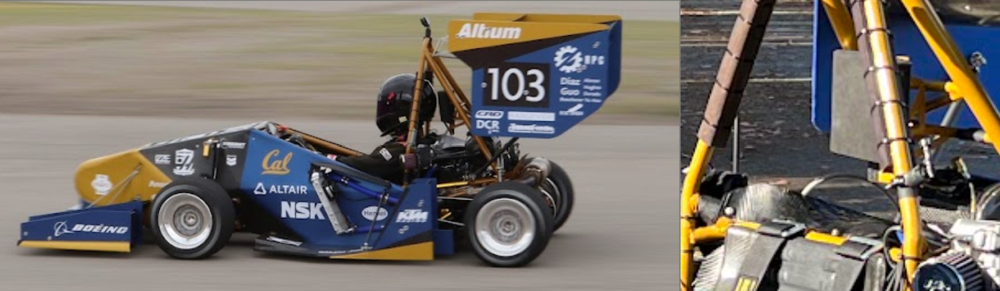
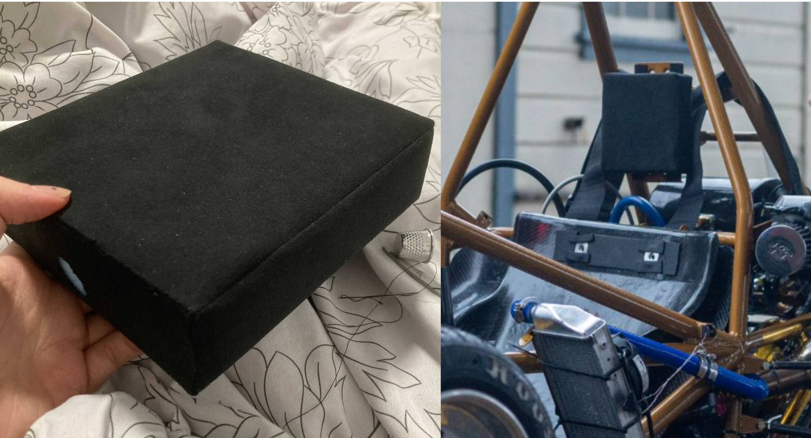
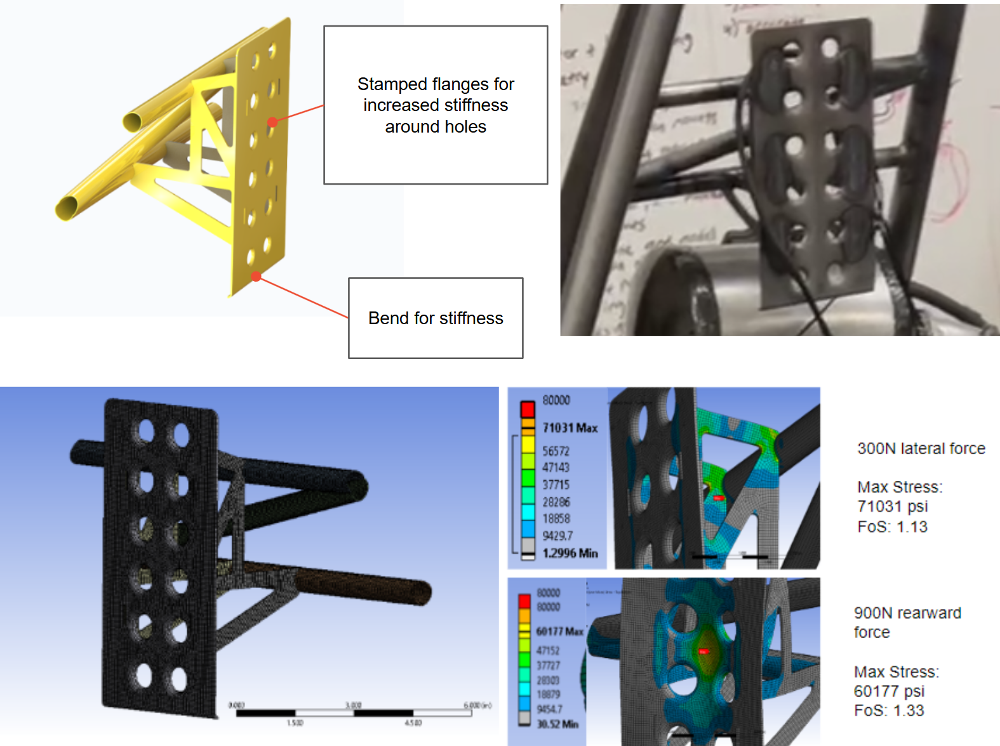

The headrest was one of the tallest single components on the car, making it a high-value target for mass reduction. The design goal was to minimize mass as aggressively as possible while maintaining driver safety, providing a wide range of adjustability, and meeting structural requirements under lateral and rearward impact loads specified by competition rules.

The headrest provides 7 inches of continuous adjustability using dual-lock velcro, allowing drivers of different heights to position the pad correctly without discrete step adjustments. The padding consists of foam and a polycarbonate backing (size optimized within competition rules), with foam volume reduced by 42% compared to the previous year while still meeting safety requirements. Both the foam and polycarbonate sheet were wrapped in Alcantara fabric for with the final cover, which I made on a sewing machine to achieve a clean, tailored fit around the molded geometry

The mounting bracket was designed to maximize strength-to-weight ratio, using a mix of round tube and stamped sheet metal. Stamped flanges (dimples) were added around the mounting holes on the back plate to locally increase stiffness without adding significant mass. These flanges were formed using a custom 3D printed die, allowing the stamping geometry to be tuned and iterated cheaply before committing to final tooling. A bend was also introduced into one of the structural members purely for stiffness, increasing the section's resistance to bending without adding material.
The mount was validated under two load cases per competition rules: a 300N lateral force and a 900N rearward force, both applied to the headrest mounting interface. Under the 300N lateral case, the max stress reached 71,031 psi for a factor of safety of 1.13, with the highest stress concentrated around the stamped flange region near the tube-to-plate junction. Under the 900N rearward case, max stress reached 60,177 psi for a factor of safety of 1.33, concentrated around the central mounting hole. Both cases met the minimum required factor of safety while keeping the mount as light as possible.

Mass optimization • Sheet metal design and stamping • Custom tooling design • Jigging • FEA • Material selection for safety • CAD (SolidWorks) • Fabric sewing • Design for adjustability and ergonomics • Compliance with safety rules
Email: jennifersili@berkeley.edu
LinkedIn: linkedin.com/in/jennifersili